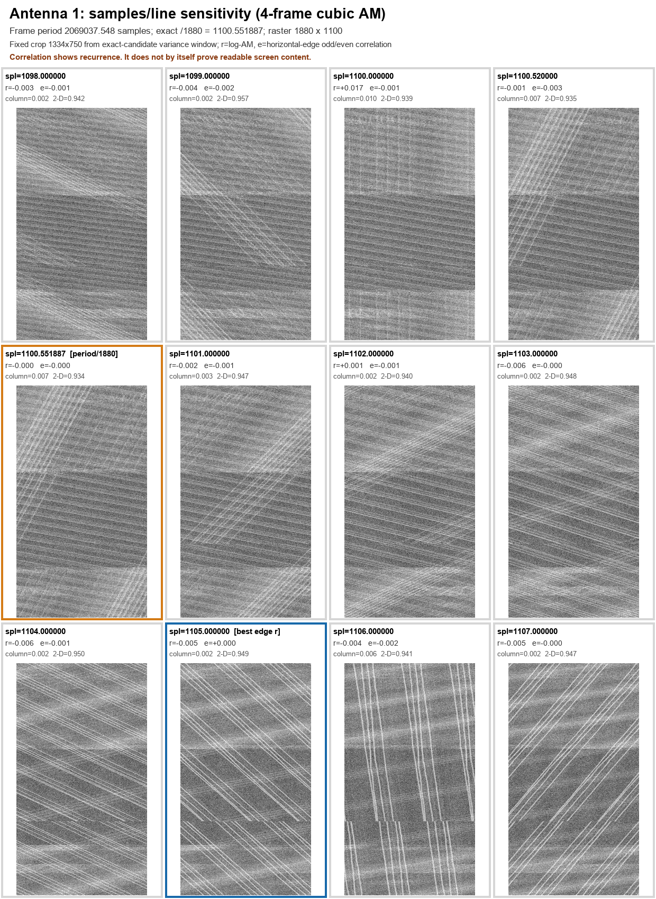
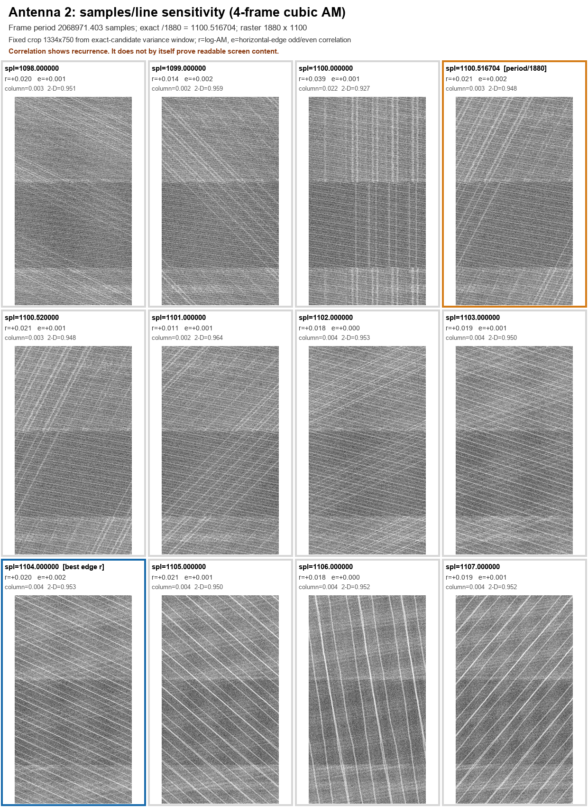
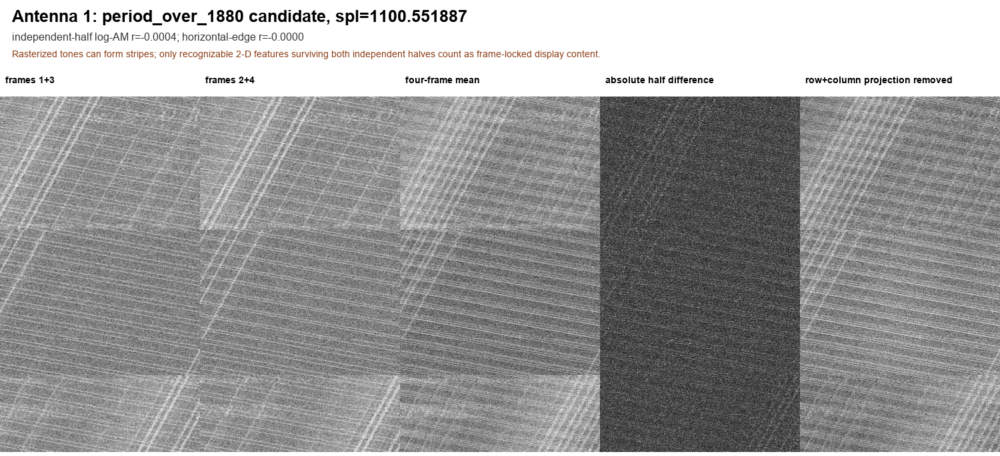
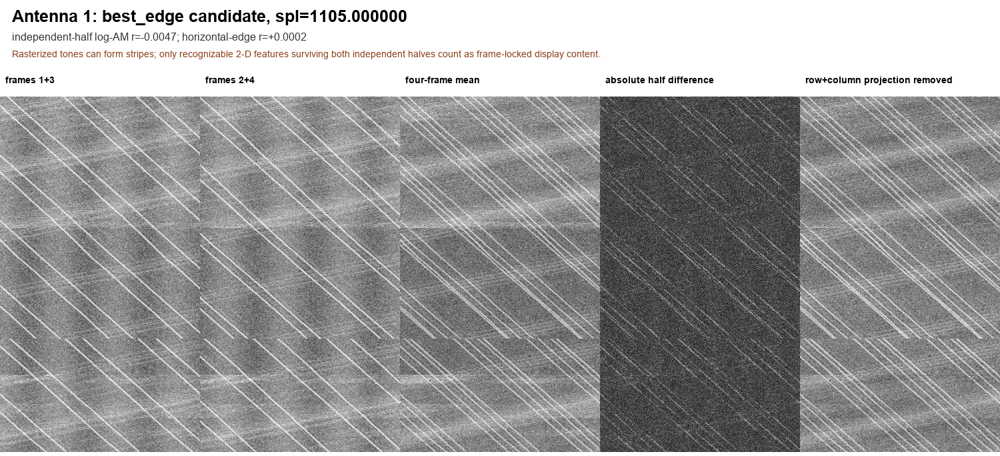
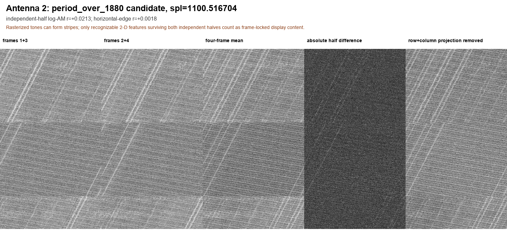
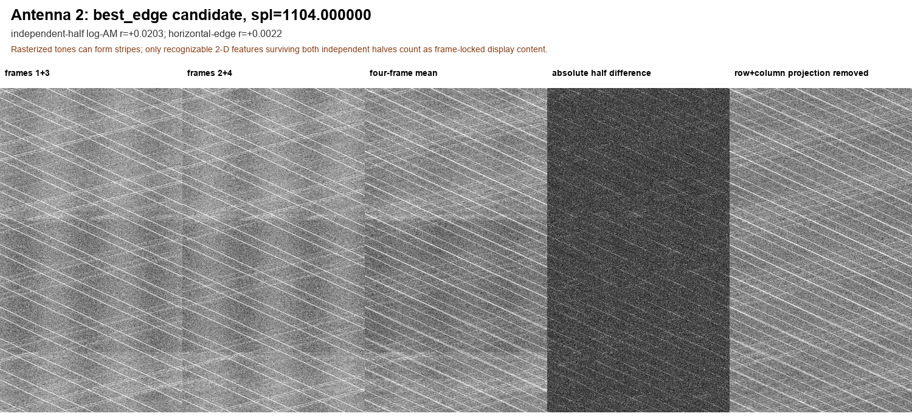

안테나 1·2 line-period 민감도 스윕
| 파일 | 검증 frame period | period / 1880 | 해당 후보 log-AM r | 해당 후보 edge r | 스윕 최대 edge r | 판정 |
|---|---|---|---|---|---|---|
| 안테나 1 | 2,069,037.548 samples | 1100.551887 | −0.000438 | −0.000020 | +0.000174 @ 1105 | 반복 화면 없음 |
| 안테나 2 | 2,068,971.403 samples | 1100.516704 | +0.021285 | +0.001836 | +0.002182 @ 1104 | 반복 화면 없음 |
각 후보는 같은 1334×750 crop과 4-point cubic fractional interpolation을 사용했다. 상관도는 독립 묶음 (frames 1+3)과 (frames 2+4) 사이에서 계산했다. 파일 메타데이터에 sample rate가 없으므로 이 스윕은 samples 단위만 사용한다.




독립 프레임 묶음 비교 이미지 보기







